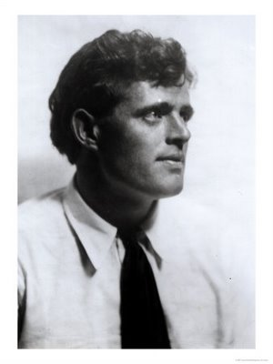

Một người quyết chí thắng nghịch cảnh,
Ba tháng học hết chương trình trung học
và viết 51 cuốn sách trong 18 năm
Ảnh

Jack London (1876-1916)
Những danh nhân mà thiếu thời phải làm những nghề mà hồi xưa cho là ti tiện, thì ta thường thấy: Abraham Lincoln đốn củi, cày ruộng, chăn bò chó các chủ trại; Heinrich Schliemann đong rượu, cân cá, đếm khoai cho các tiệm tạp hoá; Quản Trọng làm chú bán dầu; J.J. Rousseau làm đầy tớ cho các nhà quyền quí, nhưng chưa có nhà nào như Jack London, trôi dạt khắp nơi, từ Nhật tới Alaska (miền tây bắc Gia Nã Đại), làm đủ các nghề cực khổ: thuỷ thủ phụ rỡ hàng, hải khấu, gác dan, thợ trong các xưởng, rửa chén dĩa trong các khách sạn, cọ nhà, đào vàng; có hồi đói quá phải xin ăn, bị nhốt khám. Theo Dale Carnegie thì Jack London bị nhốt khám cả trăm lần ở Hoa Kỳ, Mễ Tây Cơ, Mãn Châu, Nhựt Bản và Triều Tiên; lần lâu nhất là ở Buffalo (Huê Kỳ) vì tội du thủ du thực. Hồi đó ông ngoài hai mươi, hết tiền, trốn trong toa xe lửa tới
Ông thành công đột ngột và rực rỡ như vậy chính là nhờ cuộc đời ba đào của ông, nhờ ông đã gặp được rất nhiều nghịch cảnh ấy, nghĩa là ông say mê chép thành truyện những bước gian truân của ông cùng những cảnh hải hùng của vũ trụ, những nỗi đau lòng trong xã hội. Ít khi ta thấy văn chương dào dạt nhựa sống như tác phẩm của ông.
°
° °
Đời Jack London gồm hai thời kỳ, thời kỳ thứ nhất là thời kỳ hỗn độn, lưu lạc, cơ cực, vừa kiếm ăn vừa tự học; thời kỳ thứ nhì là thời kỳ thành công, tài năng phát triển, sáng tác liên tiếp.
Ông cố ông gốc gác ở Anh, qua Huê Kỳ lập nghiệp và chiến đấu anh dũng trong hàng ngũ của
Jack London là con dòng sau, sanh ở
Cậu sớm thích đọc sách và cũng như phần đông trẻ khác, ưa loại mạo hiểm, du lịch, như Đời
°
° °
Từ năm 11 tuổi, đời Jack London bắt đầu vất vả, cô Eliza xuất giá: chồng là một đại uý già, goá vợ. Thân phụ cậu làm ăn thất bại, gia đình mỗi ngày mỗi suy. Vì không ưa lối dạy nhồi sọ của bà giáo, cậu không tấn tới, suốt ngày ở thư viện thành phố, đọc hết cuốn này đến cuốn khác, từ sử ký, du lịch, rồi chép đặc cả nhiều tập vở, tới nỗi hoá đau: mắt mờ, đầu lảo đảo.
Chẳng bao lâu cậu phải làm việc giúp nhà. Tuổi thơ của cậu tới đó là hết: dậy từ ba giờ sáng để bán báo, xong rồi mới đi học. Chiều về lại bán báo. Chủ nhật thì quét dọn cho các tiệm nước, hoặc giao nước đá cho từng nhà. Có lúc lại gác đêm cho một công ty, lượm quân ki (quille)[1] cho những người chơi say rượu. Được đồng nào cậu mang về đưa hết cho mẹ.
Năm 13 tuổi, quần áo rách rưới, lam lũ quá, cậu mắc cỡ không dám tới trường để thi tiểu học. Những phút vui nhất trong thời đó là khi mọi việc xong rồi cậu xuống một chiếc thuyền nhỏ dài độ bốn thước, giương buồm lên, thả theo bờ biển để đánh cá. Nhìn cảnh biển bao la, tâm hồn cậu lâng lâng, mơ mộng những cuộc viễn du tả trong sách, rồi chỉ muốn đâm thẳng ra khơi, theo cánh chim mà tới những nơi xa lạ ở bên kia chân trời mù mịt.
Hai năm sau, cậu không được hưởng những lúc vui ngắn ngủi đó nữa và phải vào làm thợ trong một hãng chế tạo hộp sắt để chứa đồ hộp. Xưởng là một chuồng ngựa dơ dáy, hôi hám, không cửa sổ, ánh nắng chỉ lọt vào qua khe ván. Công việc của cậu là phải coi một bộ phận máy mà chỉ vô ý một chút là đủ mất ngón tay. Tai nạn xảy ra rất thường, nhất là thợ đàn bà.
Sau này kể lại thời đó, Jack London viết:
“Dù là mệt lữ đi nữa, chúng tôi chúng tôi cũng không có thì giờ ngước mắt lên, hoặc thở dài. Chỉ vô ý một giây thôi là ngón tay văng ra. Tôi may lắm mà không bị thương (…). Buổi chiều bọn con trai chúng tôi được nghỉ vài phút để nói chuyện. Con gái cũng làm việc nhiều như con trai mà không được nghỉ như vậy. Ngoài những phút đó ra, chúng tôi phải chăm chú làm như bị cự hình, tới đứt gãy gân cốt được”.
Sự bốc lột của chủ nhân thật tàn nhẫn. Có khi cậu phải làm đến nửa đêm, mệt quá, không còn biết gì nữa, bước về nhà như một người máy. Có lần cậu phải ngồi luôn ở máy suốt ba mươi giờ liên tiếp. Thường thì cứ 11 giờ khuya về tới nhà, ăn xong, 12 giờ đi ngủ, 5 giờ sáng dậy để 7 giờ có mặt tại hãng. Trong nhật ký của cậu, ta đọc:
“Như vậy đời còn có nghĩa gì đối với tôi? Phải làm cái kiếp trâu ngựa hay sao? Tới con ngựa cũng không phải làm cực khổ như tôi (…). Tôi phải làm việc trong hãng đó ba tháng hè để có tiền học trong ba tháng (…) tiền công rất ít, song nhờ làm thêm giờ nên tôi lãnh được năm chục đô la mỗi tháng. Nhưng tiền đó, tôi không giữ lấy một xu (…). Mùa thu năm ngoái tôi rán để dành được năm đô la. Má tôi lại hãng lấy hết số tiền đó vì người có việc phải tiêu gấp. Tối hôm đó tôi muốn tự tử”.
Chán nản quá, cậu bỏ nghề đó, theo một bọn hải khấu, chuyên đoạt sò ở ngoài khơi
“Tôi tháo dây cho buồm khỏi căng rồi theo thuỷ triều, cho tàu trôi tới quần đảo Asperges, bỏ neo ở ngoài khơi, cách bờ vài hải lý. Mộng của tôi đã thực hiện được! Tôi sắp được ngủ trên nước, thức dậy trên nước, sống suốt đời trên nước!”.
°
° °
Năm đó Jack London mới mười sáu tuổi nhưng lực lưỡng nhờ bản chất, và hiểu đời ít nhiều nhờ mấy năm lăn lộn để kiếm miếng ăn, cho nên trong nghề đoạt sò chàng không thua kém ai. Cũng truỵ lạc, nóc hết ly huýt ky này tới ly khác rồi say mèm, cũng cướp nhân tình của người khác – một cô cùng tuổi với chàng – rồi sống với chàng như vợ chồng, cũng kiếm được nhiều tiền nhưng cũng có đêm thua bạc tới một trăm tám mươi đô la mà không hề ân hận. Gì thì gì cũng còn hơn là làm như trâu mười hai giờ một ngày trong một xưởng hôi hám để lãnh mỗi giờ một cắc.
Được mấy tháng như vậy, sau một đêm say sưa chàng tỉnh dậy thấy túi thì rỗng mà tàu thì hư, không còn tiền sửa, chàng bán tàu, hùn vốn với một người khác cũng làm cái nghề bất lương đó trong ít lâu rồi bỏ luôn, xin làm lính tuần tiểu. Sự thay đổi lạ lùng nhưng dễ hiểu: chàng chỉ muốn sống hết những cảnh nguy hiểm, đã trải qua đời ăn cướp, nay muốn thử nghề bắt đồ lậu. Chàng vào hạng nhân viên phụ, không được ăn lương, chỉ được hưởng một phần tiền phạt mà kẻ bị bắt phải đóng cho ty quan thuế. Nhưng khi tàu đoan[2] rượt một tàu buôn lậu trong cơn giông tố, chàng rất sung sướng: “Tôi như điên! Tàu chạy thú quá! Nó nhảy đâm vào ngọn sóng trắng xoá như một con ngựa đua. Tôi không ném nỗi nổi vui. Buồm căng, con tàu bổ nhào xuống, và tôi, một thằng người chim chích ở giữa cơn giông tố, tôi chỉ huy sự chiến đấu trong gió”. Chàng luyện tinh thần chiến đấu đó để sau này thắng nghịch cảnh trong nghề cầm bút.
Chàng uống rượu dữ, say bí tỉ không biết bao nhiêu lần, có lần liên tiếp ba tuần lễ. Người ta đã tưởng chàng truỵ lạc thành con người bỏ đi. Nhưng rồi một hôm chàng biết nghĩ lại. Lần đó, chàng say quá, té xuống nước, dòng nước cuống chàng ra biển. Chàng hồi tỉnh lại, lờ mờ hiểu tình cảnh, đập chân đập tay cho khỏi chìm. Trong khi để mặc cho dòng nước trôi đi, chàng bỗng cảm thấy tủi nhục cho cái đời mình mà trào lệ, muốn tự tử và trước khi tự tử, chàng hát lên một điệu lìa đời. Chàng nằm ngửa trên nước mà ngó sao lấp lánh trên trời và hát hết khúc này đến khúc khác, toàn một giọng ai oán cho tới sáng thì chàng tỉnh hẳn, lạnh muốn cóng tay chân, không đủ sức lội vào bờ nữa. Một người đánh cá vừa kịp vớt được chàng. Từ đó chàng bớt uống rượu.
Một lần chàng bị một tên buôn lậu Trung Hoa bắt được trói lại, quẳng lên một đảo hẻo lánh; may phúc chàng tự gỡ trói trốn thoát được trước khi nó về. Truyện đó sau chép lại trong cuốn Le mouchoir jaune (Chiếc mùi xoa vàng) tả đời nguy hiểm của bọn lính tuần biển.
Sau vụ đó, chàng xin nghỉ, đổi qua làm thuỷ thủ trong một chiếc tàu chạy dọc theo bờ biển Nhật Bản và biển Behring (ở phía bắc Thái Bình Dương). Chàng siêng năng làm đủ các công việc nặng nhọc trong tàu, có thì giờ thì đọc sách, nhận xét bạn bè và đủ các hạng người mà chàng gặp. Lần đầu tiên đặt chân lên Yokohama, chàng thán phục dân tộc Nhựt đã tiến hoá rất mau, trong hai mươi năm đã xây dựng được những châu thành tối tân và đông đúc bực nhất thế giới.
Về tới nhà, bao nhiêu tiền bạc dành dụm được chàng đưa hết cho cha mẹ, muốn xin làm thuỷ thủ trong một chiếc tàu đi nam Thái Bình Dương, mà không gặp chiếc nào, nên ở lại San Francisco để kiếm việc khác.
°
° °
Vì phải kiếm tiền gắp để nuôi nhà, chàng xin vô làm trong một xưởng dệt. Và lần này chàng nhất định đem hết tâm lực ra yêu công việc, để cho người ta thấy rằng công nhân cũng có người đáng trọng.
Lúc rãnh chàng ra thành phố để đọc sách, đọc rất kỹ, nhận thấy các du ký và truyện phiêu lưu viết rất nhạt nhẽo, so với những cảnh chàng đã mục kích, so với cuộc đời chàng đã sống thì không có nghĩa gì cả. Chàng bắt đầu có một ý thức về giá trị của mình.
Cũng vừa đúng lúc đó, thân mẫu chàng đọc trong báo San Francisco Call tin tức về một cuộc thi văn nghệ. Bà thúc đẩy con dự thi. Làm việc mười giờ một ngày ở xưởng, chàng mệt quá rồi, nhưng cũng rán chiều lòng mẹ, song còn do dự không biết nên viết truyện gì. Bà cụ bảo: “Con thử viết một truyện gì về biển cả hoặc về Nhựt Bản xem sao”. Đêm đó Jack London suy nghĩ rồi năm giờ rưỡi sáng, lấy một tập vở, viết một hơi tới bữa cơm trưa, trên cái bàn nhỏ kê trong bếp. Bài dự thi hạn là hai ngàn tiếng, chàng đã viết quá số đó mà mới hết nửa câu chuyện. Đêm hôm đó, chàng viết nốt, được thêm hai ngàn tiếng nữa; rồi đêm sau, chàng sửa chữa, tóm tắt lại cho không quá số hạn định.
Ít lâu sau, chàng ngạc nhiên thấy báo tuyên bố kết quả bài “Một cơn bảo ngoài khơi biển Nhựt Bản” được giải nhất mà những người được giải nhì và ba đều là những sinh viên đại học. Thân phụ chàng hãnh diện, và chàng vui quá, mất ngủ trong một thời gian. Chàng lãnh được hai mươi lăm đô la, mà tiền công cả tháng ở xưởng dệt chỉ có bốn chục đô la. Chàng tự tin, thầm cảm ơn tác giả cuốn Signa hồi nhỏ đã dạy cho chàng bài học này: hễ đại đởm thì thành công. Đúng, phải có đại đởm – nói cho đúng phải tự tin – thì mới làm nên sự nghiệp, nhưng đức đó chưa đủ, Jack London viết thêm vài truyện nữa gởi cho tờ San Francisco Call và thất bại liên tiếp. Bài “Một cơn bảo ngoài biển khơi Nhựt Bản” kỹ thuật chưa được già giặn, nhưng lời văn có chỗ vừa hùng vừa đẹp nhờ tài quan sát và óc mỹ quan của tác giả, như đoạn dưới đây: “Trong boong tàu, gió thổi mạnh lạ lùng (…), nó dựng đứng lên, y như một bức tường, làm cho ta đứng không vững mà lảo đảo muốn té, và những ngọn sóng ghê gớm làm cho ta ngạt thở (…) đêm tăm tối thành thử công việc của chúng tôi khó khăn hơn. Nhưng, mặc dù không có ánh sao ánh trăng nào xuyên qua được đám mây đặc nó chạy trốn trước cơn giông, hoá công cũng giúp chúng tôi được một chút. Một ánh sáng êm đềm phát từ mặt biển gào thét dữ dội, vì trong những ngọn sóng mạnh mẽ, hàng tỉ tỉ những vi ti vật chiếu ra, những điểm lân quang nhỏ rực rỡ như muốn bao phủ chúng tôi như một trận lụt lửa. Ngọn sóng càng dưng lên thì càng mỏng đi, cong lại, sẵn sàng để tan vụng ra. Nó gầm lên, đập vào bao lơn tàu, đánh văng thuỷ thủ ra khắp phía và trải lên tàu một lớp ánh sáng, khi nó rút lui, những mảnh nhấp nhánh rung rung vương lại trong các kẹt, rồi một ngọn sóng khác lại quét hết cả đi để chiếm chỗ những mãnh đó”.
Năm đó ông mười tám tuổi.
Sau ông lại đổi nghề để kiếm thêm tiền, vào làm một nhà máy điện, lại bị thiên hạ bóc lột. Phải làm những công việc nặng nhọc nhất, gấp hai người phu thường, mà mỗi tháng chỉ nghỉ được một ngày. Ông mệt tới nỗi, buổi tối lên xe điện về nhà, ông ngủ trên xe, đến nơi mà không hay, người ta phải đánh thức ông dậy, rồi đỡ ông xuống xe vì ông đứng không nổi. Về tới nhà, ông vừa nhai bánh vừa lim dim, ăn xong lăn ra ngáy, người thân phải thay quần áo cho rồi khiêng lên giường. Chịu không nổi, ông xin thôi. Nghỉ ít lâu và ngày đầu ngủ một giấc luôn hai mươi bốn giờ.
°
° °
Kế đó là thời kỳ lang thang. Nạn thất nghiệp đang lan tràn khắp Huê Kỳ. Vài người như Kelly và Coxy hô hào bọn thất nghiệp hợp nhau thành từng đoàn ở mỗi châu thành rồi tiến tới
Jack London nhập bọn ngày 6-4-1894, sau khi nhận một số tiền của chị, là cô Eliza. Ông sống chung với bọn thất nghiệp, lúc hết tiền, đói quá, cũng ăn xin như họ. Nhưng trong mấy tháng màn trời chiếu đất, thất thiểu suốt Bắc Mỹ từ tây qua đông đó, ông đã thấy biết bao cảnh rừng núi chót vót, đồng nội bao la, gặp biết bao hạng người trong các giới, người ta gọi họ là cặn bã của xã hội, nhất thiết ông đều ghi trong óc để sau này viết sách.
Nửa đường ông bỏ đoàn, đi một mình tới
Nhưng sau đó ông bị bắt gần thác
°
° °
Cũng may lúc đó gia đình ông qua cơn túng bấn. Thân phụ ông làm sở Cảnh sát, đủ bao bọc cả nhà. Ông xin người nối lại việc học, xin được vô trường Trung học Berkely, mặc dầu đương giữa niên khoá. Ông đóng cửa để học suốt ngày, có khi suốt đêm, nhất định thi vô đại học. Khi nào mệt quá ông gục đầu trên bàn học để ngủ, rồi tỉnh dậy học tiếp cho tới sáng, làm cho láng giềng phải ngạc nhiên sao nhà ông để đèn suốt thâu đêm. Vừa học vừa viết truyện đăng báo của trường, thành thử ông vốn vạm vỡ mà sau mấy tháng, da tái mét, mắt thâm quầng, sức mạnh sút trông thấy. Nhất là ông vừa học vừa hoạt động cho đảng Xã hội mà ông mới gia nhập, tổ chức các mít tinh, diễn thuyết trước công chúng. Báo chí mạt sát ông, cảnh sát mấy lần bắt ông và hiệu trưởng trường trung học ghét ông. Gần cuối năm đó, Jack Lonlon lại phải đi làm kiếm thêm tiền chi tiêu, hoặc gát cổng, hoặc chuì rửa nhà cửa. Ông thấy tương lai còn xa lắc: hai năm trung học rồi bốn năm đại học cộng là sáu năm, mà tuổi đã 20 mươi, không thể trông mong ở sự giúp đỡ của gia đình lâu như vậy được. Ông quyết định học nhảy, bỏ trường công, xin bà Eliza một số tiền vô học một trường tư để trong bốn tháng có thể thi vô đại học. Trong năm tuần lễ ông học ngày học đêm rồi một hôm viên hiệu trưởng trường tư không dám nhận ông nữa, vì ông học tấn tới quá, sợ hiệu trưởng trường công sẽ ghen và làm khó dễ. Ông bất bình, không thèm nói năng gì bước ra liền, về nhà học lấy, và thi vào đại học, đậu[3].
Ở đại học, Jack London muốn chuyên luyện văn chương, không thích lối dạy của các giáo sư, vì những vị này chỉ chú trọng tới ngữ pháp, không biết hướng dẫn tài năng của mỗi sinh viên, nên ông phải đọc thêm rất nhiều và đồng thời tập viết đủ loại: truyện ngắn, thơ, văn trào phúng, tuỳ bút, tiểu luận…
Lúc đó ông đã có chủ trương rõ rệt là muốn viết văn thì trước hết phải sống, sống mãnh liệt. Ông bảo một người bạn: “Trong óc anh chưa có gì để kể lại đâu. Đi nhiều và học trong đời như tôi đã học. Bất kỳ ai cũng có thể viết đúng ngữ pháp được, nhưng điều cốt yếu là phải biết diễn tả một cái gì sống (…). Tôi cam đoan với anh rằng tôi không khi nào thiếu đề tài để viết (…). Những cảnh đời ta đã trải, dù ghê gớm đến đâu cũng có cái đẹp của nó”. Rồi ông nói thêm, giọng áo não: “Tuy vậy, tôi không cầu cho con tôi tập vào đời một cách khổ cực như tôi”.
Quan niệm đó đúng, nhưng ông lại chưa luyện được một lối hành văn mà lại khinh thường ngữ pháp, nên các bài ông viết không báo nào chịu đăng. Ông buồn rầu nhưng không thất giọng, đọc lại truyện ngắn được tờ San Francisco Call thưởng mấy năm trước để tìm nguyên nhân tại sao lần đó thành công mà lần này thì thất bại. Ông thấy lỗi tại ông dùng một lối văn quá trừu tượng, mà phương pháp diễn tả chưa hoàn hảo.
Ông xin vô làm trong một tiệm giặt để kiếm ăn, ít lâu sau ông bị đuổi vì một lý do rất lạ lùng: ông tìm được một cách giặt ủi ít mệt mà nhiều kết quả, có thể vừa làm việc vừa đọc sách được. Ai cũng nhận cách đó là tiện lợi, nhưng người ta không ưa những người thợ có sáng kiến và ông thất nghiệp một lần nữa.
°
° °
Thì vừa nhằm lúc ở Mỹ có phong trào đua nhau lên miền Klondike ở
Nhưng Jack London nhất định cho thuyền qua để được lợi hai ngày mà tới
Trung tuần tháng mười, bọn ông tới miền
°
° °
Năm đó ông đã hai mươi hai tuổi mà vẫn chưa có nghề gì trong tay, vẫn thỉnh thoảng phải nhờ bà Eliza chu cấp. Bà tuy khác mẹ với ông mà mến ông hơn em ruột, gần như con. Một người bạn gái khuyên ông kiếm một chân thư ký. Ông bất bình, tuyệt giao, mặc dù biết rằng cô đó thật tình thương ông, rồi kể lể tâm sự với một người thân:
“Nếu tôi nghe lời cô ấy thì bây giờ tôi đã thành một thư ký của một luật sư nào đó, lãnh mỗi tháng bốn chục đô la, hoặc một nhân viên hoả xa, một anh chàng cạo giấy. Tôi có quần áo lạnh, tôi đi coi hát, tôi vô một hội vô nghĩa lý, tôi giao thiệp với một nhóm anh em vui vẻ, nói năng như họ, suy nghĩ như họ, hành động như họ, tóm lại, bao tử tôi được đầy, thân tôi được ấm, óc tôi khỏi lo, lòng tôi khỏi chua chát, không có tham vọng gì quá đáng mà cũng chẳng ham muốn gì, trừ cái ham muốn sắm đồ đạc và cưới vợ. Và tôi sẽ mãn nguyện được sống như một thằng múa rối. Cô đó sẽ yêu tôi, nhưng ít hơn bây giờ. Vì tôi không chịu làm một người thợ, vì tôi chứng thực trí óc tôi hơn bực trung bình, vì tôi khác phần đông những người trong giới tôi, vì những lẽ đó mà cô ấy để ý đến tôi. Nếu sau này tôi vượt lên trên mọi người thì không ai vui sướng bằng cô ấy. Nhưng bây giờ đây, thì cô ấy khuyên tôi đừng nghĩ gì đến thành công, muốn cho tôi sa lầy trong cái hạnh phúc của một đời sống thú vật. Học để làm gì kìa? Đọc một bài thơ hay có thú gì đâu? Cô ấy không hề tìm cái vui đó, mà những anh Tom, anh Dick, anh Harry chẳng biết cái vui đó và rất mực sung sướng đấy. Luyện trí tuệ để làm gì kìa? Có cần thiết gì cho hạnh phúc đâu? Không, tôi không thể thoả mãn về những câu chuyện nhạt nhẽo, về những truỵ lạc nho nhỏ, những cái phù phiếm ti tiện đó được mà lẽ ra nó làm cho tôi mãn nguyện được chứ vì nó đã làm cho anh Tom, anh Dick, anh Harry mãn nguyện.
“Nếu ngày nào má tôi mất mà tôi phải sống ở
“…Đói, đói! Từ cái ngày tôi chỉ tuân theo cái luật của bao tử, không còn biết luật lệ nào khác mà ăn cắp một miếng thịt, cho tới bây giờ, tôi lúc nào cũng thấy đói, hết cái đói về dinh dưỡng thì tới cái đói về tinh thần! Nhưng cô ấy không hiểu được tôi đâu. Mà cô ấy cũng chẳng bao giờ rán tìm hiểu tôi cả…”.
Và ông tiếp tục sống cái đời mà người ta cho là ti tiện, ai mướn làm cái gì cũng nhận, làm phu phen, quét tước, coi nhà, có lúc – ôi chua xót – lại làm người kiểu cho một hoạ sĩ nữa. Và vẫn tiếp tục viết, lần lần có nghệ thuật hơn, vì ông hiểu rằng nghệ thuật tự hạn chế là thuật khó nhất trong nghề viết văn: có cái gì để diễn tả, chưa đủ; phải biết cách diễn tả cho đừng rườm, cho mạnh mẽ mới được. Kết quả là hai tác phẩm: Người trên đường mòn (L’homme sur la piste) và Tĩnh mịch trắng (Silence blanc) được báo đăng và độc giả rất khen ngợi.
Thắng lợi đó kích thích ông. Ông nghiên cứu nghệ thuật viết của Kippling, nhà văn ông ngưỡng mộ nhất, và cấm cổ viết, nhất định viết mỗi ngày một ngàn tiếng, mỗi tuần sáu ngày. Trong một bức thư cho bạn, ông khoe:
“Tuần trước tôi viết dư một ngàn mốt tiếng, hôm nay tôi viết dư được một trăm bảy mươi hai tiếng, nhưng không vì vậy mai tôi viết bớt đi, trái lại khi nào tôi viết ít mà hoá chậm trễ thì hôm sau tôi làm việc tăng lên. Tôi tin chắc rằng viết theo cách đó thì hay hơn mà được nhiều hơn là viết không đều, tuỳ hứng”.
Victor Hugo, Balzac và nhiều văn hào khác nữa khắp thế giới tất nhận lời đó là đúng. Không thể tuỳ hứng được, không thể cho cái hứng sai khiến được, phải sai khiến nó. Dù không viết cũng ngồi vào bàn, rồi bắt nó tới. Jack London ghét cái đời công chức, nhưng ông viết văn đều đều như một công chức. Đó là một bí quyết thành công của ông. Ít lâu sau, viết đã quen, ông viết tăng lên mỗi ngày ngàn rưỡi, có ngày hai ngàn tiếng. Và mỗi ngày phải sửa từ 16 đến 46 trang ấn cảo nữa. Tôi tính ra mỗi giờ sửa nhiều lắm 15 trang ấn cảo. Như vậy mỗi ngày ông phải làm việc một ngày bao nhiêu giờ để xong hai công việc đó. Viết văn đâu phải là việc nhẹ nhàng như việc cạo giấy; mà lại làm đều đều như vậy hàng chục năm. Đáng kính chưa? Trách chi con người vạm vỡ như vậy mà mới bốn mươi bốn tuổi đã lìa đời! Có ai đọc tiểu thuyết của
°
° °
Danh ông đã có mà tiền cũng bắt đầu vô; trước kia hai ngàn tiếng, người ta trả ông 25 đô la, bây giờ một ngàn tiếng ông được lãnh 20 đô la. Ông hoan hỉ, viết thư cho bạn: “càng có nhiều tiền tôi càng sống mãnh liệt”.
Bây giờ ông mới nghĩ tới việc lập gia đình. Ông cưới cô Elizabeth Maddern một cách chớp nhoáng, quyết định trong một hai ngày, rồi chịu khổ trong năm năm. Vì tánh tình hai người không hợp nhau.
Cưới xong ít lâu, ông qua Anh để điều tra chiến tranh giữa nước Anh và dân Boers ở Nam Phi, và viết phóng sự về đời sống tối tăm, cực khổ của dân nghèo ở
Ở Anh ông qua chơi Pháp, Đức, Ý. Rồi trở về Mỹ viết ba cuốn làm cho giới văn nghệ ngạc nhiên: Những đứa con của miền băng giá (Les enfants de la terre glacée), Cuộc tuần du của chiếc Dazzles (La croisière du Dazzles), và Cô con gái của xứ tuyết (La fille de neiges). Báo chí ca tụng ông là Kippling của Mỹ.
Ít lâu sau, cuốn Tiếng gọi của rừng[4] – tác phẩm có giá trị nhất của ông – ra mắt độc giả. Nhưng ông chỉ lãnh được có hai ngàn đô la, mà nhà xuất bản chắc lời gấp trăm số đó vì tác phẩm được dịch ra hai chục thứ tiếng và đã bán được hai triệu cuốn.
Năm 1904, tình hình giữa Nga và Nhựt căng thẳng, tờ San Francisco Examiner biết trước thế nào cũng có chiến tranh, yêu cầu Jack London qua Nhựt làm đặt phái viên cho báo. Ông nhận lời. Xuống tàu Sibéria trước khi chiến tranh nổ.
Tới Moji, một điểm quân sự, ông bị nhà cầm quyền Nhựt giữ lại điều tra, rồi gởi về Kokura để điều tra thêm; rốt cuộc ông bị giam, máy chụp hình bị tịch thu, viên đại sứ Huê Kỳ ở
Sau nhiều gian nan ông tới được Séoul, kinh đô Triều Tiên, nơi đó đại đội đầu tiên của Nhựt đóng binh. Tướng Nhựt tiếp đãi ông nhã nhặn, phái năm sáu người theo hầu ông, nhưng không cho ông làm được việc gì cả, bài viết phải đưa họ kiểm duyệt, hình chụp cũng vậy và ông không được ra khỏi châu thành ngoài hai cây số. Nhưng ông cũng có dịp nhận xét tâm lý dân tộc Nhựt mà cảnh cáo người Mỹ: “Cái hoạ Nhựt Bản về kinh thế không đáng lo bằng cái hoạ về chiến tranh. Nếu họ thắng Nga, thì họ sẽ kiêu căng lắm, mà những người da trắng sẽ khó sống trên đất họ”.
Trong khi ông ở Triều Tiên thì bà vợ ở
“…Nếu cô không hiểu tôi nữa thì đời tôi sẽ hỏng, vì luôn luôn tôi hi vọng thực hiện một ý muốn xa xôi, mờ mờ”. Ông phàn nàn là từ trước sống một đời như cô độc, không tỏ tâm sự với ai, không gặp được người tri kỷ, có thể cùng với ông than thở khi nghe bản nhạc hay, đọc một bài thơ đẹp; một người vừa biết sống trong thực tế mà vừa yêu cái thế giới tưởng tượng, nhận thấy những nỗi khổ của nhân loại mà mơ ước một xã hội hoàn thiện hơn.
Hai ông bà qua đảo Jamaique hưởng tuần trăng mật, rồi trở về Glen Ellen, sống trong một biệt thự, ông lại viết đều đều, phần nhiều là những tác phẩm có tính cách xã hội như cuốn Gót sắt (Le talon de fer), cuốn Con đường (La route). Cả hai cuốn đều bị chỉ trích, cuốn trên vì lời tiên đoán buồn thảm quá, cuốn dưới vì tả xã hội bằng những nét hiện thực tối tăm quá.
°
° °
Năm 1907, ông thuê đóng xong một chiếc tàu đặt tên là Snark, tính tháng mười sẽ đi Hawai, lênh đênh trên biển miền nam Thái Bình Dương, ghé Samoa, Tasmanio, Nouvelle Zélande châu Úc, Nouvelle Guinée, Phi Luật Tân, Nhựt Bản, Triều Tiên, Trung Hoa, Ấn Độ, rồi về châu Âu, thăm Đức, Áo, Nga, để nhận xét và tả đời sống hoạt động của nhân loại.
Chương trình du lịch của ông là bảy năm. Trong hai năm đầu, nằm dưới tàu ông viết được những cuốn: Chuyến đi của tàu Snark (La croisière du Snark), Martin Eden, truyện một chiến sĩ xã hội, Mạo hiểm (Aventures) tả đời sống ở quần đảo Salomon, Truyện biển miền nam (Les récits des mers du sud), Dòng dõi kiêu hãnh (La maison de la fierté) gồm những truyện về đảo Hawai, Bình minh rực rỡ (Radieuse aurore).
Tới Hawai, hai ông bà phải ngưng cuộc du lịch vì ông mắc một bệnh lạ: tay phù lên, lớn gấp hai, tróc một lớp da dày gấp sáu bảy lần lớp da thường. Móng chân cũng mọc ra rất nhanh và dày. Các y sĩ chuyên môn cho là một bệnh thần kinh, khuyên ông bớt làm việc tinh thần. Ông bà phải về Mỹ, lập trại ở Glen Ellen.
Nghỉ ngơi ít lâu, ông lại thèm gió biển, xuống một chiếc tàu đi xuống hải giác Horn ở cực nam châu Mỹ. Thời sướng nhất của ông là những tháng lênh đênh trên biển, nằm dài ở boong tàu đọc sách, đọc chán thì viết. Trong năm tháng đó, ông viết được ba cuốn: Thung lũng trăng (La vallé de la lune), Cuộc nổi loạn của Elsineur (La mutinerie d’Elsineur) và John Barleycorn mà nhiều chương là tự truyện của ông.
Nhiều thanh niên mới cầm bút gởi tác phẩm nhờ ông phê bình và chỉ giáo. Ông trả lời một người:
“Có cái gì để mà nói, điều đó chưa đủ, còn phải rán diễn ý của mình một cách khéo léo nhất, hấp dẫn nữa (…). Nếu cần tập sự năm năm mới thành một người thợ rèn giỏi, một nghề tương đối dễ - thì phải cần bao nhiêu năm làm việc dữ dội, mười chín giờ một ngày, nghiên cứu về hình thức, về cách diễn, về nghệ thuật và cách luyện nghệ thuật, để cho một người có thiên tư, có cái gì để mà nói, thành được một nhà văn có tên tuổi trên văn đàn…? Cậu mới hai mươi tuổi, làm sao có đủ thì giờ luyện tài được. Cậu phải nhận rằng cậu mới học độ năm tháng nay (…). Sự học nghề của cậu chưa bắt đầu mà, chứng cứ là bản thảo cậu gởi cho tôi đó; nếu cậu đọc những sách báo đương xuất bản thì sẽ nhận thấy ngay rằng truyện cậu viết không thể đăng được…”.
Ta thấy càng từng trải, càng về già ông lại càng trọng hình thức, và bài học đó ông đã phải dò dẫm tìm lấy trong khoảng mười năm.
Mùa xuân năm 1914, khi chiến tranh giữa Hoa Kỳ và Mễ Tây Cơ không tránh khỏi, Jack London được một tờ báo mời làm thông tín viên. Ông vui vẻ nhận lời, hy vọng sẽ viết được nhiều bài tường thuật có giá trị. Trước khi ra chiến trường, ông đi thăm các cơ quan quân đội, thốt lên lời này:
“Nếu người ta áp dụng cách tổ chức, cùng nhau phát minh khoa học để cải thiện nhân sinh, chứ không phải để chém giết nhau thì thế giới này sẽ đẹp biết bao!”. Thấy sự tàn phá ghê gớm của bom đạn, ông không tin rằng có đại chiến giữa các cường quốc, vì theo ông, không dân tộc nào ngu dại tới nỗi tự tử bằng cách dùng súng ống để giải quyết những xích mích với một dân tộc khác, ông còn ngây thơ mà tuyên bố rằng nghề đi lính sẽ yên ổn hơn nghề làm thợ: nghề làm thợ còn thường bị tai nạn về máy móc chứ đi lính thì không bao giờ phải bắn nhau vì không có đại chiến nữa.
Không một dân tộc nào muốn chém giết nhau cả, những kẻ gây chiến để thủ lợi thì vẫn còn, mà dân chúng thì răm rắp theo họ, và ít tháng sau đại chiến nổ ở châu Âu. Lúc đó Jack London đau bao tử, mất ngủ, về trại dưỡng sức.
Thấy đảng Xã hội bất lực, ông tuyên bố ra khỏi đảng rồi xuất bản thêm cuốn Hải báo (Loup de mer).
Năm 1916, sức ông mỗi ngày mỗi suy, mà ông vẫn tiếp tục viết. Bệnh bao tử nặng quá, không sao chữa được, ông mê man rồi tắt thở ngày 21 tháng 11, để lại bản thảo cuốn Cherry chưa viết xong.
Trước khi chết ông viết thư cho một bạn thân, bác sĩ Ecrison, dặn dò những lời cuối cùng: “Hoả tán là cách độc nhất thích nghi, hợp lý và đoan chính để cho đời khỏi bận về ta (…). Như vậy cũng tiện cho con cháu nữa. Tại sao để cho thể xác thối nát của ta làm xấu cảnh thiên nhiên đi (…)? Vả lại đọc sử ta chẳng thấy rằng bao nhiêu những gắng sức ích kỷ để vĩnh tồn sau khi chết đều thất bại cả ư? Trong các Kim tự tháp, vua Ai Cập chỉ lưu lại cho ta ít di tích để bày trong các viện bảo cổ, chứ có gì khác đâu?”.
Những gắng sức ích kỷ để vĩnh tồn thì tất phải thất bại, nhưng những gắng sức vị tha trong lúc sống thì bao giờ cũng thành công. Còn thanh niên, thì tên ông còn nhắc tới, và những tác phẩm của ông như Tiếng gọi của rừng, Đứa con của sói, Nanh trắng, Truyện biển miền nam… còn được trân tàng trong mỗi tủ sách gia đình vì ai cũng nhận ông là một trong số các nhà văn có công nhất với bọn trẻ: ông đã dạy họ bài học can đảm, mạo hiểm, kiên nhẫn, thương người trong những truyện mà nghệ thuật hấp dẫn rất cao.
Chú thích:
[1] Một khúc gỗ tròn, dài dựng đứng trên đất, người chơi lăn những cục tròn để lật những quân ki đó.
[2] Đoan (douane): quan thuế, hải quan. (Goldfish).
[3] Theo Wikipedia thì ông thi đậu vào Đại học California tại Berkeley vào năm ông 19 tuổi. (Goldfish).
[4] Nhan đề của nguyên tác là The Call of the Wild, bản Pháp dịch của Louis Postif là L’appel de la forêt và bản Việt dịch của Nguyễn Công Ái và Vũ Tuấn Phương là Tiếng gọi nơi hoang dã. (Để khỏi rườm, tôi chỉ chú thích tên tác phẩm tiêu biểu này thôi). (Goldfish).
{kind=link}